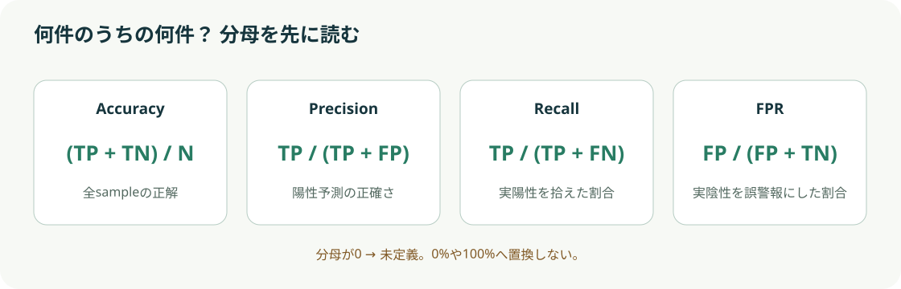
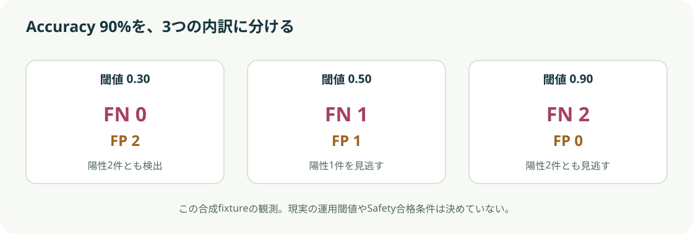

まず予想：閾値を上げると何が変わる？
実陽性は2件、実陰性は18件。閾値0.90では全件が陰性予測になっても、18件の正解が残ります。Accuracyだけで陽性を検出できたか判断できるでしょうか。
操作画面は説明モデル
score ≥ 閾値 → 陽性予測（1）
実陽性 2 / 実陰性 18
保存済みPython原票を表示
scoreは作者が固定した合成値
scoreは作者が固定した合成値
Python実計算
混同行列 0.50
予測：陽性 1予測：陰性 0
実陽性 → 陽性 / TP—検出
実陽性 → 陰性 / FN—見逃し
実陰性 → 陽性 / FP—誤警報
実陰性 → 陰性 / TN—正しい陰性
上段：実陽性2件 / 下段：実陰性18件
割合と分母
Accuracy / 正解率—
Precision / 陽性予測の正確さ—
Recall / 実陽性の検出率—
FPR / 実陰性の誤警報率—
scoreと閾値の位置を読む
横軸は固定score。破線より右側（同値を含む）が陽性予測です。色だけに頼らず、下の表でもsampleごとの分類を確認できます。
TP 検出FN 見逃しFP 誤警報TN 正しい陰性
| Sample | 実label | 固定score | 予測 | 分類 |
|---|
分母と反例を図で確認

